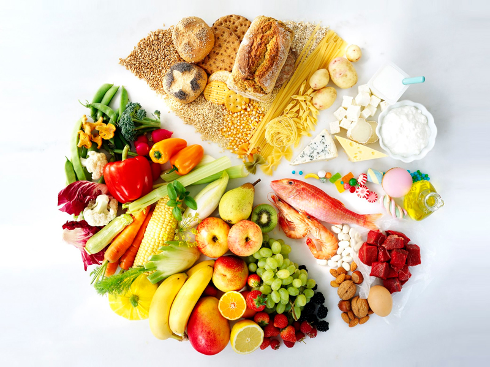

Una vida saludable
cuida y ama tu cuerpo
¿como mejorar tu alimentación?
No hay una dieta “ideal” que sea adecuada para todos. Las necesidades nutricionales son específicas de cada individuo, pero todo el mundo necesita una dieta equilibrada que incluya alimentos variados que aporten los diferentes tipos y cantidades de nutrientes que necesitamos para mantener una buena salud. Si bien las necesidades nutricionales y alimentarias individuales varían con la edad, sexo, salud, estado y niveles de actividad, los consejos alimentarios básicos para los adultos recomiendan:
-Comer carbohidratos con almidón como base de la mayoría de las comidas.
-Comer frutas y verduras tanto como sea posible todos los días.
-Comer legumbres con regularidad.
-Consumir leche y productos lácteos regularmente en pequeñas cantidades.
-Comer carne, pollo, huevos y pescado regularmente en cantidades normales.
-Elegir cuidadosamente el tipo de grasas y aceites en la dieta y usarlos en cantidad limitada.
-Limitar el consumo de azúcar y de alimentos y bebidas azucaradas.
-Limitar el consumo de sal.
-Limitar el consumo de alcohol.
-Mantener el equilibrio energético para lograr un peso corporal saludable.
-Beber mucha agua a diario.
lo que es mejor, es consultar a un nutriologo, ya que ellos te dan
¿Por qué es importante el ejercicio en nuestra vida?
Lo más probable es que hayas oído incontables veces que hacer ejercicio es "bueno para ti". Pero ¿sabías que, en el fondo, también te puede ayudar a sentirte bien? Hacer la cantidad adecuada de ejercicio físico puede aumentar tu nivel de energía y hasta ayudarte a mejorar el estado de ánimo.
Realizar una actividad física diariamente aporta un gran número de beneficios a nuestra salud. Los estudios científicos así lo demuestran, desde mejorar nuestra forma física, pasando por evitar enfermedades, mantener un peso saludable (o bajar de peso si tenemos sobrepeso), hasta mejorar nuestra salud mental y nuestra vida social.

Te mostraremos algunos canales de youtube que te pueden ayudar para que puedas lograr tus objetivos:
Comenzó con un blog de moda y viajes, pero rápidamente se convirtió en una gurú fit. Durante la cuarentena, sus rutinas cortas pero súper intensas fueron las más vistas en Youtube a nivel mundial, y la favorita fue su desafío (challenge) para conseguir una panza chata en 2 semanas con más de 84 millones de reproducciones. Acá te contamos quién esta asiática que se convirtió en fenómeno mundial. Actuamente tiene una pagina en la cual puedes ver rutinas.
En los últimos años esta peruana se ha unido a las tendencias de los viajes y la condición física. Se ha dedicado a compartir por YouTube sus rutinas y consejos para mantenerse en forma, pues ha admitido que antes era muy perezosa para la actividad física.
Patry Jordán, impulsora y creadora de Gym Virtual. Desde pequeña siempre ha mostrado mucho interés por la actividad física y el deporte. Tal es así que se formo como monitora deportiva y durante muchos años ha estado trabajando en el sector impartiendo clases de todo tipo.
Pamela no solo es una modelo e influencer exitosa, en la mayoría de sus post se atribuye la misión de motivar a sus seguidores. Ya ha demostrado que sus conocimientos para el ejercicio y la vida saludable en general son muy avanzados, su Instagram lo dicen todo.
Estar en constante movimiento es la clave para una buena salud y además para sentirte bien contigo mismo físicamente. Según la OMS, la inactividad física es el cuarto factor de riesgo en lo que respecta a la mortalidad mundial. Es importante por lo menos realizar 30 minutos de ejercicio al día y llevar una vida más sana. Puedes bailar, ir al gimnasio, correr, caminar o hacer algún deporte; con cualquiera de estas actividades puedes mejorar tu rendimiento físico.
Mantener una buena hidratación
El agua es esencial para el cuerpo ya que te ayuda a regular la temperatura corporal, manteniendo la piel hidratada y elástica, lubricando articulaciones y órganos y manteniendo una buena digestión. Nuestro cuerpo pierde agua a través de la orina, heces, respiración y sudoración; por lo que, comúnmente se recomienda tomar de 2 a 3 litros de agua diariamente, sin embargo cada persona tiene necesidades distintas, consulta con un profesional de la salud la cantidad adecuada para ti.
Comer saludable

Una buena alimentación incluye una dieta balanceada, escogiendo un plan de alimentación para cada persona dependiendo de su organismo. Así nos aseguramos de que nuestro cuerpo tenga los nutrientes necesarios que nos pueden ayudar a evitar enfermedades e infecciones, dejar de lado problemas relacionados con el peso, entre otros. Te sugerimos acudir con un nutriólogo para que pueda asesorarte.
Dormir bien
dormir por lo menos 6 horas diarias, ya que dormir poco puede afectar la salud. Algunos de los problemas como consecuencia de no dormir lo suficiente son: reducción de los reflejos, capacidad de concentración disminuida y problemas de apetito y gástricos. No olvides irte a descansar con la mente despejada y sin que ningún inconveniente te deje estar tranquilo durante tu sueño.
Mantente libre de estrés
El trabajo, el dinero, los hijos, la pareja, etc., pueden ser un gran distractor de nuestro bienestar emocional. Se recomienda estar lo más tranquilo posible ya que el estrés también afecta nuestra salud. No dejes que nada interfiera en tu tranquilidad, organiza tu vida de manera que no tengas que caer en conflictos que no te dejen nada bueno; cuida de ti, nadie más lo hará por ti.